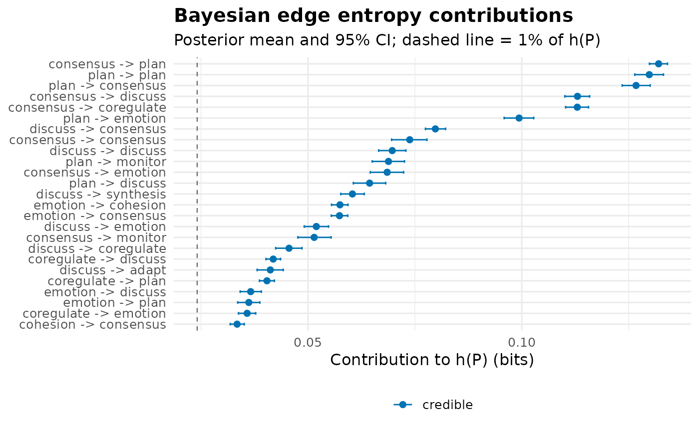

Bayesian estimation of the transition entropy quantities of
transition_entropy and the edge-level decomposition of
entropy_network. Each row of the transition matrix gets an
independent Dirichlet posterior (counts + prior); Monte Carlo
draws propagate count uncertainty into the entropy rate, the per-state
branching entropies, and every edge's entropy contribution, yielding
posterior means and credible intervals.
The practical purpose is to exclude unstable estimates: an edge
whose contribution rests on a handful of observations has a wide
posterior, and is flagged non-credible unless it credibly accounts for at
least min_share of the process entropy. $model is the
entropy network with non-credible edges zeroed - the stable entropy
skeleton.
Usage
entropy_bayes(
x,
prior = 0.5,
draws = 4000,
ci = 0.95,
min_share = 0.01,
base = 2,
seed = NULL
)Arguments
- x
A frequency
netobject(build_network(method = "frequency")), anynetobjectthat carries its$data(counts are rebuilt automatically), a count matrix, or a wide sequence data.frame. Group dispatch onnetobject_group.- prior
Numeric. Dirichlet prior concentration added to every cell of the count matrix (default
0.5, Jeffreys).- draws
Integer. Number of Monte Carlo posterior draws (default
4000).- ci
Numeric in (0, 1). Credible interval mass (default
0.95).Numeric in [0, 1). An edge is credible when the lower bound of the credible interval of its share of the entropy rate exceeds this value (default
0.01: the edge credibly accounts for at least 1% of process entropy).- base
Numeric. Logarithm base (default
2, bits).- seed
Integer or NULL. RNG seed for reproducibility.
Value
An object of class "net_entropy_bayes" with:
- summary
Tidy data.frame - one row per chain-level quantity (
entropy_rate,stationary_entropy,redundancy), with posteriormean,sd,ci_lower,ci_upper.- states
Tidy data.frame - one row per state: posterior mean/CI of the row entropy and of the stationary probability.
- edges
Tidy data.frame - one row per observed transition: posterior mean/sd/CI of the contribution (bits), posterior mean/CI of its share of the entropy rate, and the
credibleflag.- network
netobject- posterior-mean entropy network (all edges), carrying the entropy house style.- model
netobject- the pruned entropy network: posterior means wherecredible,0elsewhere.- draws_entropy_rate
Numeric vector of posterior entropy-rate draws (for further analysis or plotting).
- prior, draws, ci, min_share, base, states_names
Call metadata.
Details
With prior > 0 the posterior puts mass on every transition, so
contribution draws are strictly positive and a naive "CI excludes zero"
rule would flag every edge as credible. The share criterion is used
instead: an edge is stable when it credibly carries at least
min_share of \(h(P)\). Unobserved transitions (count 0) get
only prior mass and are never credible under any sensible
min_share.
The posterior mean entropy rate is typically slightly below the plug-in estimate on sparse data (Dirichlet smoothing pulls rows toward uniform but averages over uncertainty); the difference vanishes as counts grow.
Examples
# \donttest{
net <- build_network(group_regulation_long, method = "relative",
actor = "Actor", action = "Action", time = "Time")
eb <- entropy_bayes(net, seed = 1)
eb
#> Bayesian Transition Entropy (9 states, bits; Dirichlet prior 0.5, 4000 draws)
#>
#> entropy_rate: 2.411 [2.396, 2.425]
#> stationary_entropy: 2.783 [2.770, 2.796]
#> redundancy: 0.373 [0.361, 0.385]
#>
#> Edges: 78 observed; 31 credible (share of h(P) credibly > 1%).
#> Use summary() for the edge table, plot() for the posterior, and
#> $model for the pruned stable entropy network.
summary(eb)
#> Chain-level posterior:
#> quantity mean sd ci_lower ci_upper
#> entropy_rate 2.4108 0.0075 2.3958 2.4253
#> stationary_entropy 2.7833 0.0066 2.7703 2.7963
#> redundancy 0.3725 0.0060 0.3609 0.3847
#>
#> Per-edge posterior (sorted by contribution):
#> from to count contribution sd ci_lower ci_upper share
#> consensus plan 2505 0.1320 0.0011 0.1298 0.1341 0.0548
#> plan plan 2304 0.1298 0.0017 0.1264 0.1331 0.0538
#> plan consensus 1788 0.1267 0.0017 0.1235 0.1300 0.0526
#> consensus discuss 1190 0.1130 0.0015 0.1101 0.1159 0.0469
#> consensus coregulate 1188 0.1130 0.0014 0.1102 0.1156 0.0469
#> plan emotion 904 0.0994 0.0017 0.0959 0.1028 0.0412
#> discuss consensus 1269 0.0798 0.0012 0.0775 0.0822 0.0331
#> consensus consensus 519 0.0738 0.0021 0.0696 0.0778 0.0306
#> discuss discuss 770 0.0697 0.0016 0.0665 0.0729 0.0289
#> plan monitor 465 0.0688 0.0019 0.0650 0.0726 0.0286
#> consensus emotion 460 0.0685 0.0020 0.0646 0.0724 0.0284
#> plan discuss 418 0.0644 0.0019 0.0606 0.0682 0.0267
#> discuss synthesis 557 0.0604 0.0014 0.0577 0.0632 0.0251
#> emotion cohesion 923 0.0575 0.0010 0.0555 0.0594 0.0238
#> emotion consensus 909 0.0574 0.0010 0.0554 0.0593 0.0238
#> discuss emotion 418 0.0520 0.0015 0.0491 0.0548 0.0216
#> consensus monitor 295 0.0515 0.0020 0.0476 0.0554 0.0213
#> discuss coregulate 333 0.0456 0.0016 0.0425 0.0486 0.0189
#> coregulate discuss 539 0.0419 0.0009 0.0402 0.0436 0.0174
#> discuss adapt 282 0.0412 0.0016 0.0381 0.0442 0.0171
#> coregulate plan 471 0.0404 0.0009 0.0387 0.0422 0.0168
#> emotion discuss 289 0.0366 0.0013 0.0342 0.0391 0.0152
#> emotion plan 283 0.0362 0.0013 0.0336 0.0388 0.0150
#> coregulate emotion 339 0.0358 0.0010 0.0338 0.0378 0.0148
#> cohesion consensus 844 0.0334 0.0008 0.0318 0.0351 0.0139
#> plan cohesion 155 0.0328 0.0019 0.0291 0.0367 0.0136
#> coregulate consensus 265 0.0319 0.0011 0.0298 0.0341 0.0132
#> discuss cohesion 188 0.0317 0.0016 0.0287 0.0349 0.0132
#> emotion emotion 218 0.0310 0.0015 0.0281 0.0339 0.0129
#> cohesion plan 239 0.0265 0.0010 0.0247 0.0284 0.0110
#> monitor discuss 538 0.0259 0.0007 0.0245 0.0272 0.0107
#> coregulate monitor 170 0.0250 0.0012 0.0227 0.0273 0.0104
#> plan coregulate 106 0.0247 0.0018 0.0212 0.0285 0.0102
#> cohesion coregulate 202 0.0244 0.0010 0.0224 0.0264 0.0101
#> cohesion emotion 196 0.0240 0.0010 0.0220 0.0260 0.0100
#> monitor plan 309 0.0233 0.0007 0.0218 0.0247 0.0096
#> consensus cohesion 94 0.0225 0.0018 0.0192 0.0262 0.0093
#> monitor consensus 228 0.0205 0.0008 0.0190 0.0221 0.0085
#> emotion monitor 103 0.0190 0.0013 0.0163 0.0216 0.0079
#> discuss monitor 88 0.0186 0.0015 0.0158 0.0216 0.0077
#> emotion coregulate 97 0.0182 0.0013 0.0157 0.0208 0.0076
#> cohesion discuss 101 0.0162 0.0011 0.0141 0.0184 0.0067
#> monitor emotion 130 0.0153 0.0008 0.0137 0.0169 0.0063
#> coregulate cohesion 71 0.0142 0.0012 0.0119 0.0166 0.0059
#> synthesis consensus 304 0.0137 0.0005 0.0127 0.0148 0.0057
#> consensus synthesis 48 0.0134 0.0015 0.0106 0.0165 0.0056
#> synthesis adapt 153 0.0131 0.0006 0.0120 0.0141 0.0054
#> monitor coregulate 83 0.0116 0.0009 0.0100 0.0133 0.0048
#> discuss plan 46 0.0114 0.0013 0.0090 0.0140 0.0047
#> monitor cohesion 80 0.0113 0.0009 0.0096 0.0131 0.0047
#> cohesion monitor 56 0.0109 0.0010 0.0089 0.0129 0.0045
#> adapt cohesion 139 0.0107 0.0005 0.0098 0.0116 0.0044
#> adapt consensus 243 0.0107 0.0005 0.0098 0.0116 0.0044
#> coregulate coregulate 46 0.0104 0.0012 0.0082 0.0128 0.0043
#> cohesion cohesion 46 0.0094 0.0010 0.0075 0.0116 0.0039
#> consensus adapt 30 0.0092 0.0013 0.0068 0.0120 0.0038
#> coregulate synthesis 37 0.0089 0.0011 0.0069 0.0111 0.0037
#> coregulate adapt 32 0.0080 0.0010 0.0060 0.0101 0.0033
#> adapt emotion 61 0.0077 0.0006 0.0065 0.0088 0.0032
#> synthesis plan 49 0.0075 0.0007 0.0062 0.0089 0.0031
#> synthesis emotion 46 0.0072 0.0007 0.0058 0.0086 0.0030
#> synthesis discuss 41 0.0067 0.0007 0.0054 0.0082 0.0028
#> synthesis coregulate 29 0.0053 0.0007 0.0041 0.0067 0.0022
#> monitor monitor 26 0.0052 0.0008 0.0037 0.0067 0.0021
#> adapt discuss 30 0.0050 0.0006 0.0039 0.0063 0.0021
#> monitor synthesis 23 0.0047 0.0007 0.0033 0.0062 0.0020
#> synthesis cohesion 22 0.0044 0.0007 0.0032 0.0058 0.0018
#> plan synthesis 11 0.0041 0.0010 0.0023 0.0063 0.0017
#> monitor adapt 16 0.0036 0.0007 0.0023 0.0050 0.0015
#> adapt monitor 17 0.0035 0.0006 0.0024 0.0046 0.0014
#> emotion synthesis 8 0.0027 0.0008 0.0014 0.0044 0.0011
#> adapt coregulate 11 0.0025 0.0006 0.0015 0.0037 0.0011
#> plan adapt 6 0.0025 0.0009 0.0011 0.0044 0.0010
#> emotion adapt 7 0.0024 0.0007 0.0012 0.0040 0.0010
#> synthesis monitor 8 0.0021 0.0006 0.0011 0.0034 0.0009
#> cohesion synthesis 6 0.0020 0.0007 0.0009 0.0035 0.0008
#> adapt plan 8 0.0020 0.0005 0.0011 0.0031 0.0008
#> cohesion adapt 5 0.0018 0.0006 0.0007 0.0032 0.0007
#> share_lower share_upper credible
#> 0.0537 0.0557 TRUE
#> 0.0522 0.0554 TRUE
#> 0.0510 0.0541 TRUE
#> 0.0456 0.0481 TRUE
#> 0.0457 0.0481 TRUE
#> 0.0397 0.0427 TRUE
#> 0.0322 0.0341 TRUE
#> 0.0289 0.0323 TRUE
#> 0.0276 0.0302 TRUE
#> 0.0270 0.0301 TRUE
#> 0.0268 0.0300 TRUE
#> 0.0251 0.0283 TRUE
#> 0.0239 0.0262 TRUE
#> 0.0230 0.0246 TRUE
#> 0.0230 0.0246 TRUE
#> 0.0204 0.0227 TRUE
#> 0.0198 0.0230 TRUE
#> 0.0176 0.0201 TRUE
#> 0.0167 0.0181 TRUE
#> 0.0158 0.0183 TRUE
#> 0.0160 0.0175 TRUE
#> 0.0142 0.0162 TRUE
#> 0.0140 0.0161 TRUE
#> 0.0140 0.0157 TRUE
#> 0.0132 0.0145 TRUE
#> 0.0121 0.0152 TRUE
#> 0.0124 0.0141 TRUE
#> 0.0119 0.0145 TRUE
#> 0.0117 0.0141 TRUE
#> 0.0102 0.0118 TRUE
#> 0.0102 0.0113 TRUE
#> 0.0094 0.0113 FALSE
#> 0.0088 0.0118 FALSE
#> 0.0093 0.0109 FALSE
#> 0.0091 0.0108 FALSE
#> 0.0091 0.0102 FALSE
#> 0.0080 0.0108 FALSE
#> 0.0079 0.0092 FALSE
#> 0.0068 0.0089 FALSE
#> 0.0066 0.0089 FALSE
#> 0.0065 0.0086 FALSE
#> 0.0059 0.0076 FALSE
#> 0.0057 0.0070 FALSE
#> 0.0049 0.0069 FALSE
#> 0.0053 0.0061 FALSE
#> 0.0044 0.0069 FALSE
#> 0.0050 0.0059 FALSE
#> 0.0041 0.0055 FALSE
#> 0.0037 0.0058 FALSE
#> 0.0040 0.0054 FALSE
#> 0.0037 0.0054 FALSE
#> 0.0041 0.0048 FALSE
#> 0.0041 0.0048 FALSE
#> 0.0034 0.0053 FALSE
#> 0.0031 0.0048 FALSE
#> 0.0028 0.0050 FALSE
#> 0.0028 0.0046 FALSE
#> 0.0025 0.0042 FALSE
#> 0.0027 0.0036 FALSE
#> 0.0026 0.0037 FALSE
#> 0.0024 0.0036 FALSE
#> 0.0022 0.0034 FALSE
#> 0.0017 0.0028 FALSE
#> 0.0016 0.0028 FALSE
#> 0.0016 0.0026 FALSE
#> 0.0014 0.0026 FALSE
#> 0.0013 0.0024 FALSE
#> 0.0010 0.0026 FALSE
#> 0.0010 0.0021 FALSE
#> 0.0010 0.0019 FALSE
#> 0.0006 0.0018 FALSE
#> 0.0006 0.0015 FALSE
#> 0.0005 0.0018 FALSE
#> 0.0005 0.0017 FALSE
#> 0.0005 0.0014 FALSE
#> 0.0004 0.0014 FALSE
#> 0.0004 0.0013 FALSE
#> 0.0003 0.0013 FALSE
plot(eb)

# }